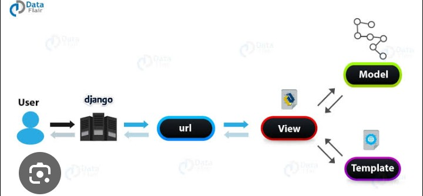
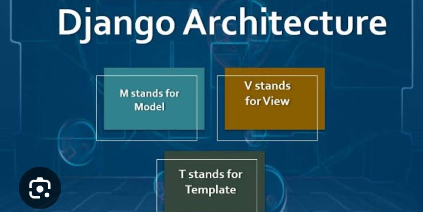
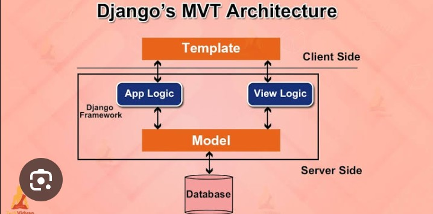

Django is one of the most powerful and popular web development frameworks built with Python. It allows developers to create secure, scalable, and professional web applications quickly by providing many built-in tools. Instead of writing everything from scratch, Django offers ready-made components for handling databases, user authentication, forms, routing, security, and much more. Because of its speed and reliability, Django is widely used by startups, large companies, and independent developers around the world.
If you already know Python, learning Django is one of the best ways to begin backend web development. It helps you create dynamic websites where users can register, log in, submit forms, upload files, and interact with databases. Many real-world applications such as blogs, e-commerce websites, school management systems, and social platforms can be built efficiently using Django.

Django is a high-level Python web framework that follows the principle of "Don't Repeat Yourself (DRY)." This principle encourages developers to reuse code instead of writing the same logic repeatedly. Django also follows the Model-View-Template (MVT) architecture, which separates data, business logic, and user interface into different sections, making projects clean and organized.
The framework was first released in 2005 and has continued to grow into one of the most trusted frameworks in the Python ecosystem. Thousands of developers rely on Django because it saves development time while maintaining excellent performance and security.
Learning Django provides many benefits for beginners as well as professional developers. Since many companies use Django for backend development, mastering this framework can open exciting career opportunities.
Django includes many built-in features that make web development faster and easier.
Before using Django, Python must already be installed on your computer. After verifying Python installation, Django can be installed using the Python package manager called pip.
pip install django
After installation, verify the installed version using:
django-admin --version
If Django has been installed successfully, the version number will appear on your screen.
Creating a new Django project requires only one command.
django-admin startproject myproject
Move into the project folder:
cd myproject
Run the development server:
python manage.py runserver
If everything is working correctly, open your browser and visit:
http://127.0.0.1:8000/
You will see Django's default welcome page, which confirms that your first project has been created successfully.

When Django creates a new project, it automatically generates several important files and folders.
Although these files may seem confusing at first, each one has a specific purpose. As you continue learning Django, you will understand how they work together to build complete web applications.
Imagine creating a school management system. Instead of building login pages, database connections, and an admin dashboard from the beginning, Django already provides many of these features. This allows developers to spend more time building useful functionality instead of repeating common tasks. That is one of the biggest reasons why Django is preferred for professional web development.
A Django project is made up of one or more applications, commonly called apps. Each app is responsible for a specific feature of the website. For example, an e-commerce website may have separate apps for products, customers, orders, payments, and user accounts. This modular structure keeps projects organized and makes development easier.
Create a new app using the following command:
python manage.py startapp blog
After creating the app, register it inside the INSTALLED_APPS section of settings.py.
Django follows the Model-View-Template (MVT) architecture. This design pattern separates different parts of an application, making the code clean, organized, and easy to maintain.
When a user visits a webpage, Django receives the request, processes it through the view, retrieves data from the model if needed, and finally displays the result using a template.

A view is simply a Python function that receives a request and returns a response.
from django.http import HttpResponse
def home(request):
return HttpResponse("Welcome to Django!")
When this view is connected to a URL, visiting that URL will display the message in the browser.
URLs connect web addresses to specific views. Open urls.py and add the following code:
from django.urls import path
from . import views
urlpatterns = [
path("", views.home),
]
Now, visiting the homepage will execute the home() view.
Templates allow developers to build dynamic web pages using HTML along with Django Template Language (DTL). Instead of writing static HTML pages, templates can display data from the database.
Home Welcome to Django
This page is rendered using a template.
Templates help separate the website's design from its business logic.
Models define the structure of data stored in the database. Every model represents a database table.
from django.db import models
class Article(models.Model):
title = models.CharField(max_length=100)
content = models.TextField()
This model creates a table with two fields: title and content.
Whenever you create or modify models, Django must update the database using migrations.
python manage.py makemigrations python manage.py migrate
These commands automatically create or update database tables according to your models.
One of Django's most powerful features is its built-in admin panel. Developers can manage users, products, blog posts, and other data without creating a separate dashboard.
Create an administrator account:
python manage.py createsuperuser
After entering your username, email, and password, start the server and visit:
http://127.0.0.1:8000/admin/
Log in with your administrator account to access the Django Admin Dashboard.
Imagine you are creating a blogging website. Instead of manually building a dashboard to publish or edit articles, Django's Admin Panel lets you add, update, or delete blog posts in just a few clicks. This saves development time and allows you to focus on improving your website's features.
Forms are an essential part of almost every web application. They allow users to enter information such as login details, registration data, comments, feedback, and contact messages. Django provides a powerful form system that automatically validates user input, reducing errors and improving security.
from django import forms
class ContactForm(forms.Form):
name = forms.CharField(max_length=100)
email = forms.EmailField()
message = forms.CharField(widget=forms.Textarea)
Using Django Forms makes it easier to collect and validate information submitted by users.
Static files include CSS, JavaScript, images, fonts, and icons that improve the appearance and functionality of a website. Django provides a dedicated system for managing static files efficiently.
{% load static %}
Keeping static files organized helps maintain professional and responsive web applications.
The Object Relational Mapper (ORM) is one of Django's most powerful features. Instead of writing complex SQL queries, developers interact with the database using simple Python code. This improves readability and reduces development time.
Article.objects.create(
title="Learning Django",
content="Django makes web development easier."
)
Retrieve all records:
articles = Article.objects.all()
The ORM automatically converts Python code into SQL queries behind the scenes.
Security is one of Django's biggest strengths. The framework includes built-in protection against many common web vulnerabilities without requiring additional libraries.
These features make Django a trusted framework for building secure web applications.
After developing a Django project locally, the next step is deployment. Deployment means publishing your website on a live server so users around the world can access it through the internet. Before deployment, developers usually disable debug mode, configure allowed hosts, collect static files, and connect a production database.
Learning Django can open many career paths in the software industry. Since Django is widely used for backend development, companies actively hire developers with strong Django skills.
Django is one of the best Python frameworks for building modern web applications. Its built-in security, powerful ORM, template engine, authentication system, and admin panel allow developers to create professional websites quickly and efficiently. Whether you want to build a personal blog, an online store, a school management system, or a large enterprise application, Django provides the tools needed to develop secure, scalable, and maintainable software. By practicing regularly and building real-world projects, you can master Django and prepare yourself for a successful career in backend and full-stack web development.